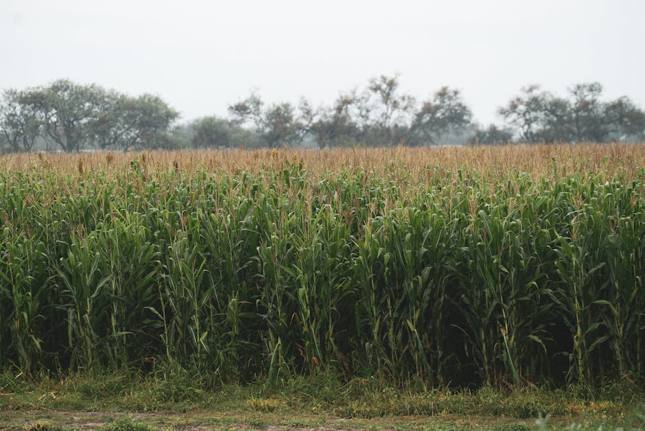

Imarika - Translating weather information into actionable advisory for farmers through AI in Kenya

IMARIKA by Strathmore University’s iLabAfrica is building low-cost automatic weather station networks to provide access to accurate, local weather information in rural Kenya. This granular data allows advisory services for small-holder farmers to shift from using generic information to location-specific guidance, delivered through farmer organizations and digital platforms. IMARIKA also works on translating weather data into actionable recommendations, addressing farmers’ difficulty in interpreting weather information.
IMARIKA by Strathmore University’s iLabAfrica is also the winner of the "Innovate Africa Challenge on Climate Action", - chosen for its potential to advance climate adaptation for small-holder farmer communities. Together with Smart Africa, FAIR Forward had supported seven startups through intensive technical and business support to develop their AI businesses focused on mitigating and adapting to climate change in four countries through the Innovate Africa Challenge format in its first iteration focusing on AI for Climate Action.
IMARIKA was also part of a Mozilla innovation challenge supporting people and projects across East Africa who leverage Common Voice’s open-source voice data set to unlock social and economic opportunities. These grants help to advance the use of open-source voice data for products that support community participation and engagement.
Data characteristics
[Auto-enriched from linked project resources]
Weather data pipeline for rural Kenya. Fetches readings from the Wireless Planet API (api.wirelessplanet.co.ke) every 3 hours. License: MIT. Data Type: Time-series weather readings. Processing: Apache Spark 3.3.0 structured streaming with data cleaning, mean-based imputation, and Z-score anomaly detection (threshold: 10.0). Storage: PostgreSQL 14 (raw table: weather_raw; processed table: weather_clean with device_id, date, temperature, wind, precipitation, anomaly flags). Throughput: ~40-50 records/second, <30 seconds end-to-end latency. Daily aggregation compresses ~1,000 raw readings into ~35 daily summaries. Requires Docker, 8GB+ RAM, and a weather API account.
Source: https://github.com/iLab-DSU/imarika-weather-pipeline
Model characteristics
[Auto-enriched from linked project resources]
Two components: (1) Weather Pipeline -- Apache Spark streaming processor ingests weather API data via Kafka, cleans it, detects anomalies, and stores raw + processed data in PostgreSQL. Produces daily weather summaries per device. Stack: Docker Compose, Kafka, Spark 3.3.0, PostgreSQL 14, Python. (2) Agricultural AI Assistant -- LangGraph-based advisory chatbot for 6 East African crops (beans, cassava, finger millet, maize, sorghum, sweet potatoes). Uses QLoRA-fine-tuned Llama 3.2 3B Instruct model, a knowledge graph (30+ nodes, 95+ edges), Chroma vector database, and OpenWeather API integration. Supports English and Swahili. Runs locally via Ollama. Requires 4GB+ GPU VRAM for inference or CPU (slower).
Source: https://github.com/iLab-DSU/imarika-weather-pipeline, https://github.com/iLab-DSU/Agricultural-Recommendations-Chat
How to use
For anyone interested in translating weather information into actionable advisory for farming practices, Imarika's Agricultural AI Assistant which is an intelligent agricultural advisory system powered by LangGraph, Knowledge Graph, and Ollama models specialized in 6 East African crops with multilingual support (English/Swahili) is worth looking into.
Anyone running several weather stations with a need to process the data may be interested in Imarika's real-time weather data processing pipeline built with Apache Spark, Kafka, and PostgreSQL.
This use case also included the development of a business model and funding model for open source AI as a stepping stone towards financially viable operations.
Use cases
Additional resources
About
Powered by / Provided by: Strathmore University’s iLabAfrica
Catalyzed by: Smart Africa (https://smartafrica.org/), FAIR Forward - AI for All (https://www.bmz-digital.global/en/overview-of-initiatives/fair-forward/), GIZ , Intellecap, intel.liftoff, Climate Change AI; Mozilla Foundation
Financed by: BMZ (https://www.bmz-digital.global/en/digital-transformation-and-development-cooperation/), Gates Foundation
Authors: Golo Rademacher; Daniel Brumund
Contact: Betsy Muriithi <bmuriithi@strathmore.edu>, Strathmore University’s iLabAfrica